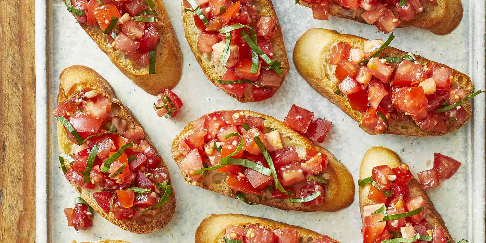
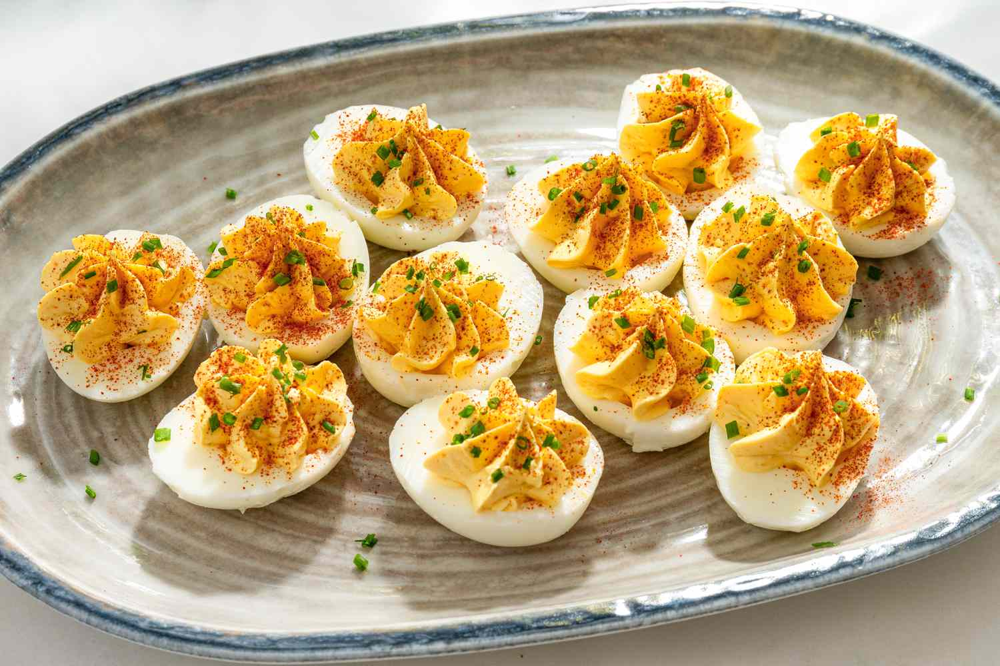

Appetizers
Bruschetta with Tomato and Basil
Ingredients: 1 baguette 3 ripe tomatoes 2 cloves garlic
Fresh basil leaves Olive oil Salt and pepper

Instructions: Slice the baguette and toast it lightly.
Dice the tomatoes and mix with chopped basil, salt, pepper,
and olive oil. Rub toasted bread with garlic and top with
the tomato mixture. Serve immediately.
Stuffed Mushrooms
Ingredients: 12 button mushrooms 100g cream cheese 1 clove
garlic (minced) Parsley (chopped) Salt and pepper

Instructions: Remove stems from mushrooms and mix them
with cream cheese, garlic, parsley, salt, and pepper. Fill
mushroom caps with the mixture. Bake at 180°C for 15-20
minutes.
Deviled Eggs
Ingredients: 6 hard-boiled eggs 2 tbsp mayonnaise 1 tsp
mustard Salt and pepper Paprika for garnish

Instructions: Halve the eggs and remove yolks. Mash
yolks with mayonnaise, mustard, salt, and pepper. Spoon or
pipe the mixture back into the egg whites. Sprinkle with
paprika.